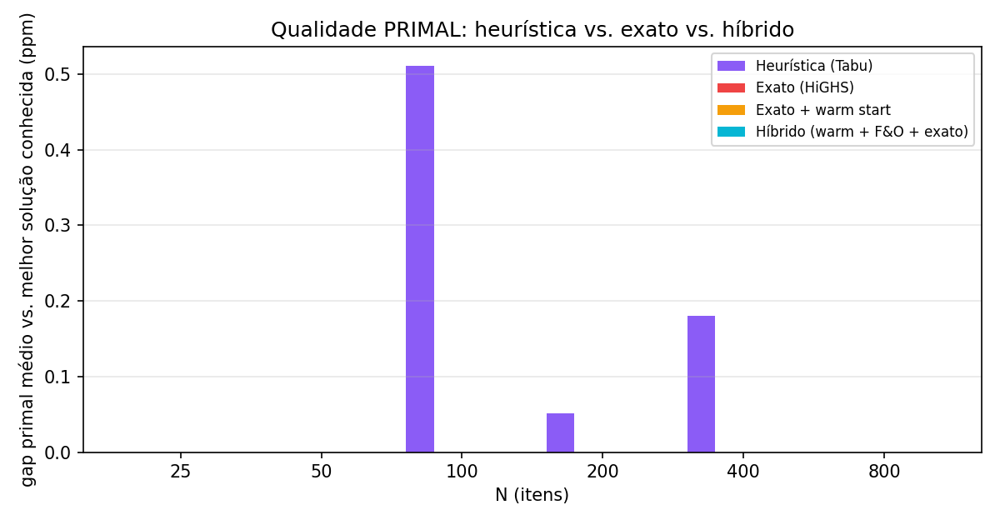
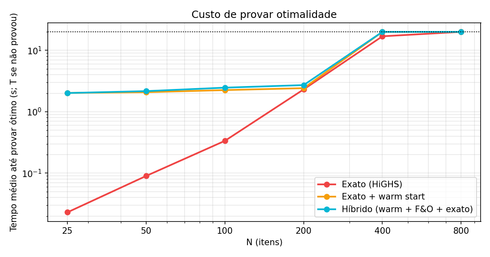

Combinando heurística e método exato na Mochila 0/1
Warm start + Fix-and-Optimize sobre o HiGHS, comparados com a Busca Tabu pura e com o exato puro, sob o mesmo orçamento de tempo, com N crescendo de 25 a 800 itens.
6tamanhos (25 → 800)
3réplicas por tamanho
4abordagens comparadas
20 sorçamento T idêntico
Problema e instâncias
Mochila 0/1
max Σ pᵢxᵢ s.a. Σ wᵢxᵢ ≤ C, x ∈ {0,1}ⁿ
Mesmo problema do TP-I (Busca Tabu + AG); aqui reaproveitamos a Busca Tabu.
Por quê esse tipo? Com p/w quase constante, o limite LP é fraco e a poda do branch-and-bound é ruim: é a família clássica que faz o exato sofrer.
As 4 abordagens (mesmo T = 20 s)
1. Heurística pura
Busca Tabu (flip + swap, tenure ≈ √n, aspiração, diversificação) usando todo o T.
2. Exato puro
MIP no HiGHS 1.15 (branch-and-cut), 1 thread, prova de ótimo (gap abs. < 1).
3. Exato + warm start
Tabu por 10 % de T → solução injetada como incumbente → exato no resto. Isola o efeito do warm start.
4. Híbrido
Warm start (10 %) → Fix-and-Optimize (até 40 %) → exato completo com o melhor incumbente.
Fix-and-Optimize: a decisão de projeto
Quem fica livre? Usamos o preço-sombra λ da capacidade na relaxação linear e o ranking de |pᵢ − λ·wᵢ| (custo reduzido): itens perto de 0 são os "incertos" da relaxação.
Janela deslizante de K itens no ranking → subproblema MIP reduzido (capacidade residual) resolvido exatamente.
K adaptativo: ×1,25 se o subproblema fecha rápido; ×0,7 se estoura o limite (2 s).
Para quando varre tudo sem melhora, devolvendo tempo ao exato.
Ablação: rc (custo reduzido) × aleatório × mix.
Resultado 1 — Quem fecha o gap?
O exato prova o ótimo em 3/3 réplicas até N = 200. Em N = 400 só 1/3 (e só o exato puro); em N = 800, 0/3. A transição está entre 200 e 400.
Resultado 2 — Qualidade da solução

O gap relativo ao limite dual (esq.) em 400/800 (~0,03 %) é do limite, não da solução: o gap primal (dir.) da heurística é ≤ 0,5 ppm. Todas as abordagens acham a mesma solução em quase todas as instâncias.
Resultado 3 — Convergência e custo
O incumbente já nasce praticamente ótimo no warm start; o que o tempo extra compra é prova, não solução melhor.
Respostas às perguntas
Onde o exato deixa de fechar?
Entre N = 200 (3/3) e N = 400 (1/3) com T = 20 s.
O híbrido empurra o limite?
Não, neste problema. Em N = 400 o híbrido provou 0/3 (o exato puro provou 1/3). Ganho: 0 tamanhos.
A heurística já iguala o híbrido?
Sim em solução: gap primal ≤ 0,5 ppm desde N = 25. O híbrido só acrescenta a certeza (limite dual) até N = 200.
A estratégia acelerou o solver?
Warm start: o exato prova o ótimo em ~0,02 s após receber o incumbente em 2 das 3 réplicas de N = 200 (1,2 s na outra), mas os 2 s do warm start custam mais que o exato puro (1,2–4,4 s) economiza. Fix-and-Optimize: 0–2 melhorias por execução, mínimas (ex.: +1 unidade de lucro em N = 400).
Por quê? (nossa leitura)
Uma só restrição: a Busca Tabu é muito forte; o incumbente inicial já está a ≤ 0,5 ppm do ótimo (medido na heurística pura), então não sobra espaço para o F&O melhorar.
O gargalo é o limite dual, e Fix-and-Optimize só mexe no limite primal.
O warm start custa tempo fixo (2 s): em N ≤ 100 o exato puro (< 0,4 s) ganha.
Ablação: as três vizinhanças (rc, aleatório, mix) tiveram resultado idêntico, pois não há melhora a achar.
Limites do estudo: 1 thread, HiGHS (não CPLEX/Gurobi), 3 réplicas, T = 20 s.
Resultados (média de 3 réplicas, T = 20 s)
N
Método
Ótimo provado
Tempo (s)
Gap vs UB (%)
Gap primal (ppm)

Metodologia
Mesmo orçamento T = 20 s de relógio por abordagem; o tempo do warm start e do F&O está dentro de T.
UB de referência por instância = menor limite dual provado entre as execuções e o limite de Dantzig.
"Fecha o gap" = HiGHS devolve status Optimal (gap absoluto < 1, lucros inteiros).